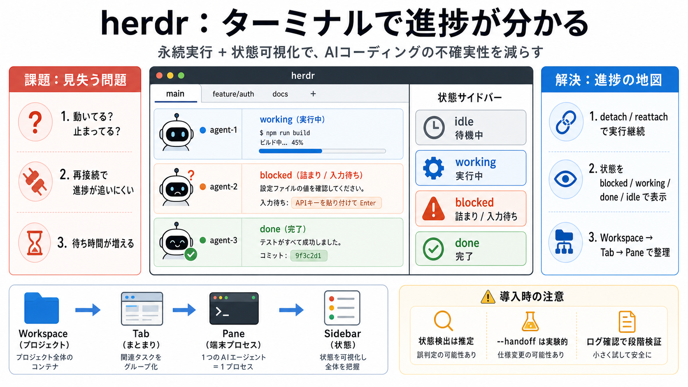

The Terminal Multiplexer That Knows What Your Agents Are Doing
herdr — The Terminal Multiplexer That Knows What Your Agents Are Doing Prism Labs 3340 subscribers 9 likes 842 views 18 …

herdr — The Terminal Multiplexer That Knows What Your Agents Are Doing Prism Labs 3340 subscribers 9 likes 842 views 18 …
# herdr. Copy the link below to share to Mastodon. herdr - A tmux-like and agent-aware terminal multiplexer. Review this…
Herdr is a terminal-based agent multiplexer designed for managing coding agents and terminal processes in one persistent…
Agent multiplexer · lives in your terminal. # One terminal. Herdr is to coding agents what tmux is to terminals: a multi…
herdr: Is This the Ultimate Agent Multiplexer? Better Stack 162000 subscribers 536 likes 24024 views 5 Jun 2026 Herdr is…